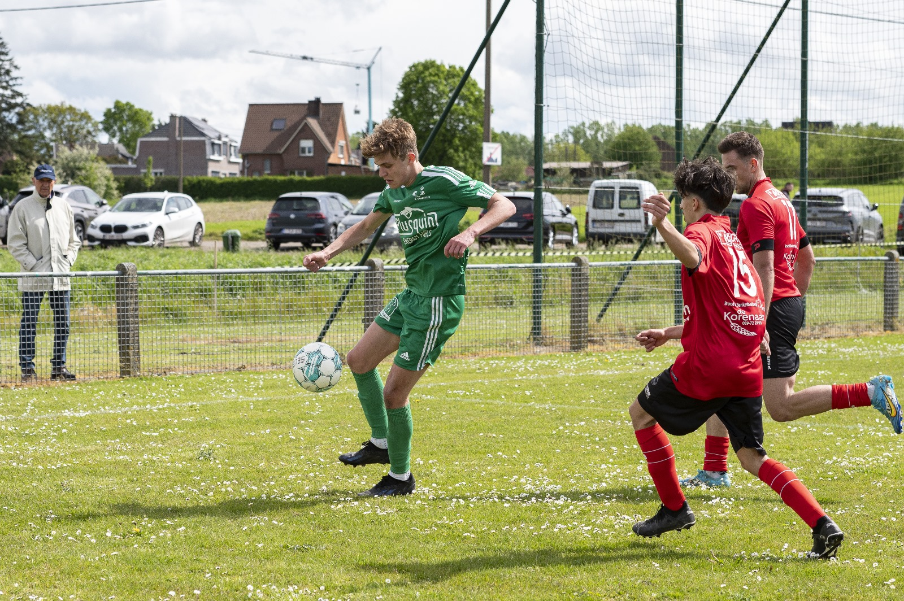
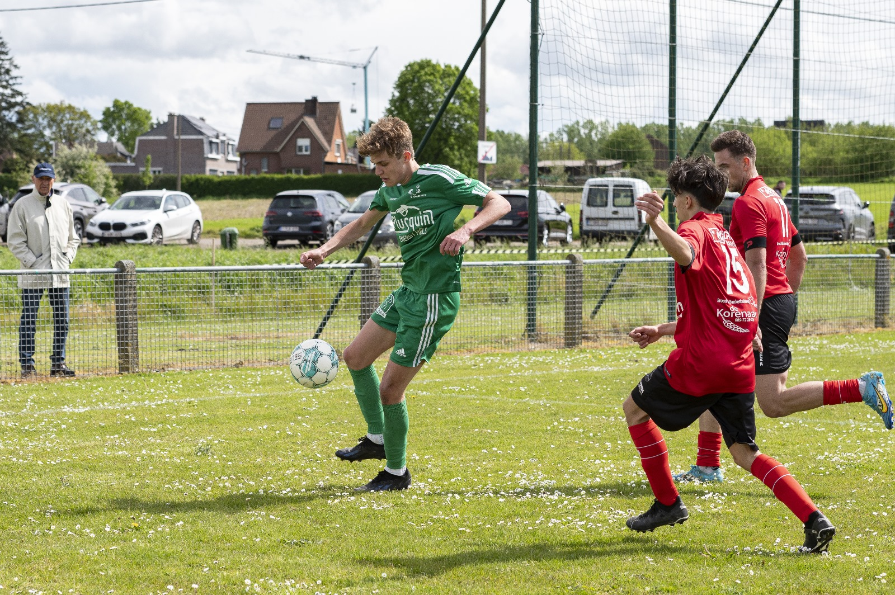

About me
Ik ben Louis Jacobs, 20 jaar oud. Ik studeer Digitale Vormgeving. Dit omdat ik mijn passie voor designs naar een hoger niveau wil brengen. Ik ben aan de richting begonnen met een kleine rugzak die ik in mijn vrije tijd al heb kunnen opbouwen. Nu ben ik klaar voor een stap verder te gaan en hier mijn werk van te maken.

 
